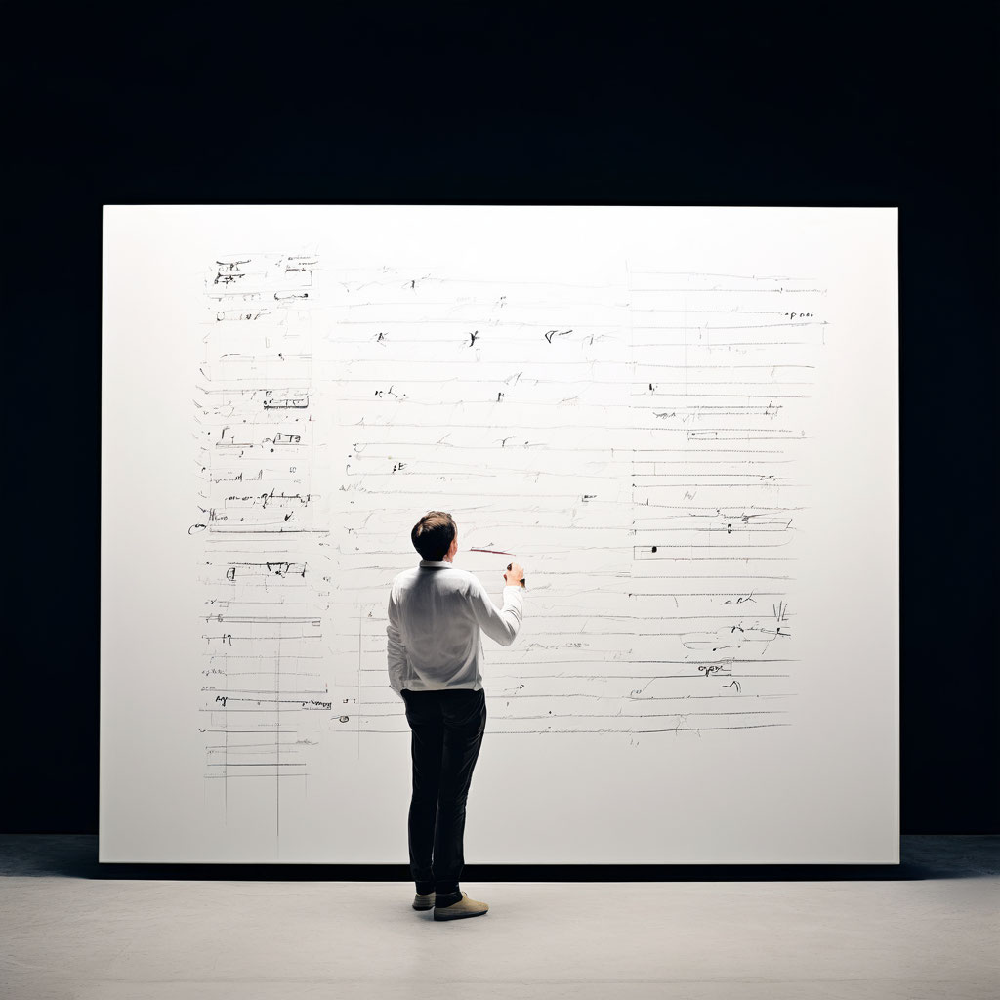

Модель изменения через метафоры

Описание:
Техника «Модель изменения через метафоры» позволяет легче выражать новый опыт, исследовать неосознаваемые мотивы, отстраниться и по-новому увидеть проблему.
Категория техники:
Слова
Время:
10 минут
Зачем:
При помощи метафор можно: легче выразить новый опыт — настроения, чувства, впечатления (экспрессивная функция); исследовать неосознаваемые мотивы, паттерны поведения, потому что раньше не было модели для их объяснения (диагностика); помочь в самопознании с помощью более экологичных (безопасных) оценок; отстраниться и по-новому увидеть проблему со стороны (диссоциация); облегчить описание и объяснение различных явлений, теорий, психологических законов (пояснение); подсказать направления для последующего развития и личностной трансформации; получить доступ к бессознательному и его ресурсам; наблюдая за тем, какие слова вы используете для описания проблемы, лучше понять собственную модель мира.
Как это работает:
С деятельностью недоминантного (для большинства людей) правого полушария мозга связано смысловое и образное мышление, поэтому именно оно используется для интерпретации метафор. Например, когда мы слышим какую-либо метафорическую историю, ее раскодированием занимается именно наше правое полушарие. Рассказанную историю мы неосознанно ассоциируем с собственными переживаемыми ситуациями и внутренними конфликтами, и затем, благодаря доступу к бессознательному и его ресурсам, находим новое решение для волнующей нас проблемы{11}. Метафора — это мощный инструмент работы и в тех случаях, когда нам мешают ограничивающие убеждения. Примером такого убеждения может служить выражение: «У меня нет способностей к учебе» (без уточнения, к чему именно и каких способностей не хватает). Применение метафоры позволяет наглядно показать, что такое убеждение является результатом обобщения, искажения и упущения («карта не есть территория»). А следовательно, чтобы стать более точным и полезным для жизни, оно должно быть переформулировано.
Алгоритм выполнения:
-
Сбор информации А. Для начала закончите следующие предложения: «Реальность похожа на...» «Жизнь — это...» «Общество — это...» «Опыт — это...» Отмечайте все образы, идеи, понятия, ассоциации, которые приходят вам в голову. Б. Сформулировав свои метафоры, уточните их, ответив на следующие вопросы: Есть ли в этих образах что-то похожее? Понравились ли мне эти образы? Если да, то почему? Почему возникли те или иные образы? Что привело меня к нынешним образам?
-
Изменение восприятия (переход к активным действиям) Во второй части психотехники придумайте действие (глагол), описывающее наиболее подходящее движение для вашего образа. Для этого снова попытайтесь ответить на вопросы: Что там происходит? Как эта метафора описывает мою жизнь? Как нужно изменить метафору, чтобы достигнуть целей, к которым я стремлюсь? Например, если в первой части вы описывали себя как автомобиль без мотора, то теперь вам бы подошла метафора «Мерседеса с мощным двигателем, который рвется вперед». Вы также можете использовать глаголы движения, такие как «открывается», «течет», «развивается», «расширяется», «окружает», «тает», «впитывает», «извлекает» или другие.
-
Принятие и интеграция Возвращаясь к вышеописанному примеру, подумайте, что вы получите, если будете думать о себе как о «мерседесе с мотором»? Какие будут в этом случае последствия? Например, вы можете выбрать менее мощный, семейный автомобиль или вообще другое транспортное средство. Выделите сильные и слабые стороны вашего образа. Продолжайте исследовать придуманную вами метафору, обозначающую ваше идеальное «Я», которое вызывает у вас радость и увлечение. Сформулируйте шаги, необходимые для достижения этого образа. Данную психотехнику можно использовать как самостоятельный инструмент для работы, так и в совокупности с другими психотехниками НЛП (и не только НЛП).
Дополнительные упражнения:
- Упражнение «Если бы я был(а)»
Почитать больше о технике:
- Бендлер Р. Большая энциклопедия НЛП. Структура магии. — М.: АСТ, 2019. Ковалев С. В. Нейропрограммирование успешной судьбы. — М.: Твои книги, 2016. О'Коннор Дж. Введение в нейролингвистическое программирование. Новейшая психология личного мастерства. Веб-публикация: http://www.lib.ru/NLP/nlp.txt. [17.05.2020]. Шевцова И. 60 авторских упражнений для тренингов. Идеи для творческого использования. Веб-публикация: https://kartaslov.ru/%D0%BA%D0% [22.04.2020]. Шерман Р. Структурированные техники семейной и супружеской терапии. Руководство. — К.: Класс, 1997. Янг, Питер. Метафоры и модели изменения. Постигаем искусство НЛП. — М.: Эксмо, 2003.
Рекомендуем прочитать:
- Кэрролл, Льюис. Алиса в Зазеркалье. — М.: Эксмо, 2019. Джозеф О'Коннор, Джон Сеймор. Введение в нейролингвистическое программирование. Новейшая психология личностного мастерства — М.: Версия, 1997. Бендлер, Ричард, Гриндер, Джон. Большая энциклопедия НЛП. Структура магии. — М.: АСТ, 2019. Янг П. Метафоры и модели изменения. Постигаем искусство НЛП. — М.: Эксмо, 2003. Korzybski A. Science and Sanity: An Introduction to Non-Aristotelian Systems and General Semantics. — Institute of General Semantics, 1994. Стендаль. О любви. Дневники. — М.: Т8, 2021. Ковалев С. В. Нейропрограммирование успешной судьбы. — М.: ИП Пирогов С.А., 2021. Стюарт, Вильям. Работа с образами и символами в психологическом консультировании. — М.: Класс, 1998.